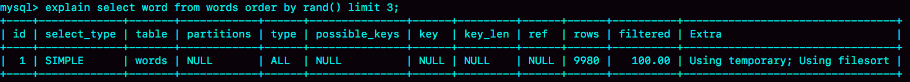
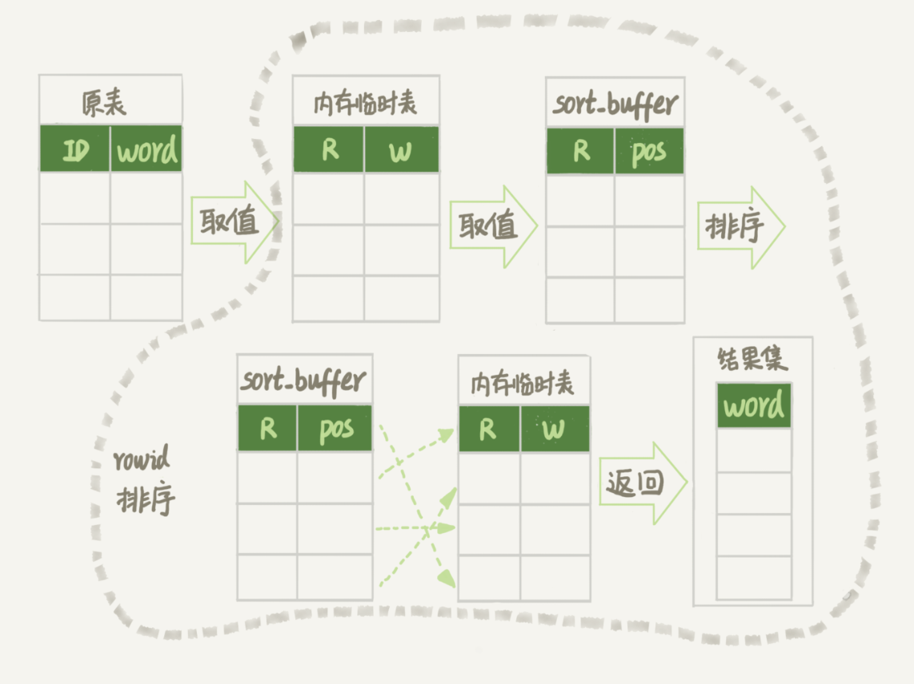
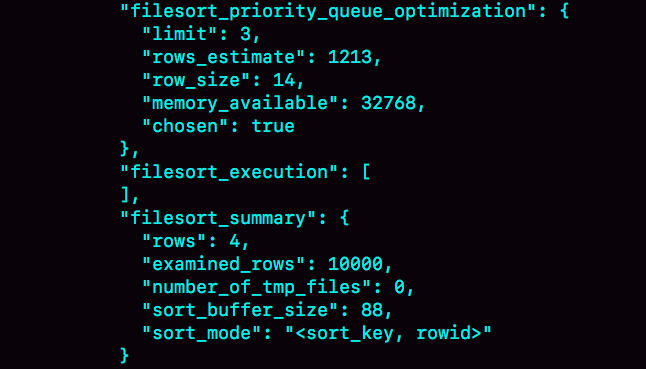
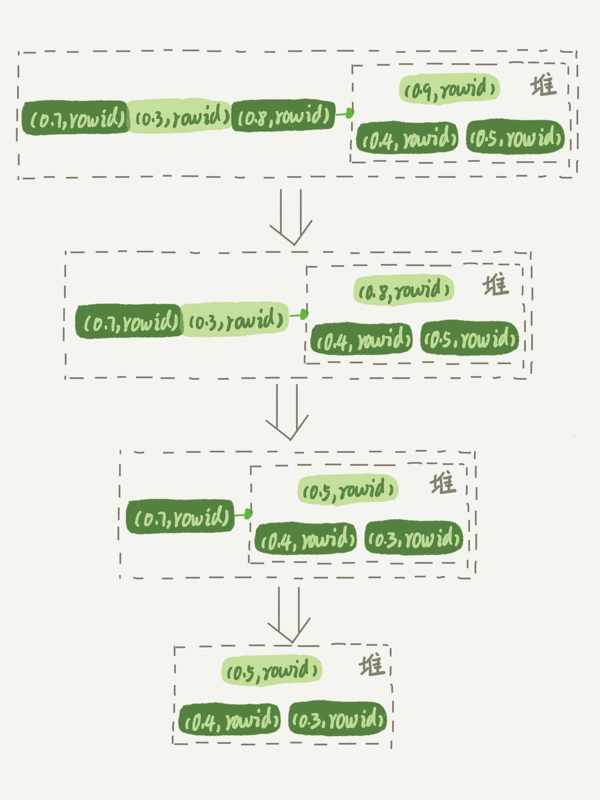

- 00 开篇词 这一次，让我们一起来搞懂MySQL.md.html
- 01 基础架构：一条SQL查询语句是如何执行的？.md.html
- 02 日志系统：一条SQL更新语句是如何执行的？.md.html
- 03 事务隔离：为什么你改了我还看不见？.md.html
- 04 深入浅出索引（上）.md.html
- 05 深入浅出索引（下）.md.html
- 06 全局锁和表锁 ：给表加个字段怎么有这么多阻碍？.md.html
- 07 行锁功过：怎么减少行锁对性能的影响？.md.html
- 08 事务到底是隔离的还是不隔离的？.md.html
- 09 普通索引和唯一索引，应该怎么选择？.md.html
- 10 MySQL为什么有时候会选错索引？.md.html
- 11 怎么给字符串字段加索引？.md.html
- 12 为什么我的MySQL会“抖”一下？.md.html
- 13 为什么表数据删掉一半，表文件大小不变？.md.html
- 14 count()这么慢，我该怎么办？.md.html
- 15 答疑文章（一）：日志和索引相关问题.md.html
- 16 “order by”是怎么工作的？.md.html
- 17 如何正确地显示随机消息？.md.html
- 18 为什么这些SQL语句逻辑相同，性能却差异巨大？.md.html
- 19 为什么我只查一行的语句，也执行这么慢？.md.html
- 20 幻读是什么，幻读有什么问题？.md.html
- 21 为什么我只改一行的语句，锁这么多？.md.html
- 22 MySQL有哪些“饮鸩止渴”提高性能的方法？.md.html
- 23 MySQL是怎么保证数据不丢的？.md.html
- 24 MySQL是怎么保证主备一致的？.md.html
- 25 MySQL是怎么保证高可用的？.md.html
- 26 备库为什么会延迟好几个小时？.md.html
- 27 主库出问题了，从库怎么办？.md.html
- 28 读写分离有哪些坑？.md.html
- 29 如何判断一个数据库是不是出问题了？.md.html
- 30 答疑文章（二）：用动态的观点看加锁.md.html
- 31 误删数据后除了跑路，还能怎么办？.md.html
- 32 为什么还有kill不掉的语句？.md.html
- 33 我查这么多数据，会不会把数据库内存打爆？.md.html
- 34 到底可不可以使用join？.md.html
- 35 join语句怎么优化？.md.html
- 36 为什么临时表可以重名？.md.html
- 37 什么时候会使用内部临时表？.md.html
- 38 都说InnoDB好，那还要不要使用Memory引擎？.md.html
- 39 自增主键为什么不是连续的？.md.html
- 40 insert语句的锁为什么这么多？.md.html
- 41 怎么最快地复制一张表？.md.html
- 42 grant之后要跟着flush privileges吗？.md.html
- 43 要不要使用分区表？.md.html
- 44 答疑文章（三）：说一说这些好问题.md.html
- 45 自增id用完怎么办？.md.html
- 我的MySQL心路历程.md.html
- 结束语 点线网面，一起构建MySQL知识网络.md.html
- 捐赠
17 如何正确地显示随机消息？
我在上一篇文章，为你讲解完 order by 语句的几种执行模式后，就想到了之前一个做英语学习 App 的朋友碰到过的一个性能问题。今天这篇文章，我就从这个性能问题说起，和你说说 MySQL 中的另外一种排序需求，希望能够加深你对 MySQL 排序逻辑的理解。
这个英语学习 App 首页有一个随机显示单词的功能，也就是根据每个用户的级别有一个单词表，然后这个用户每次访问首页的时候，都会随机滚动显示三个单词。他们发现随着单词表变大，选单词这个逻辑变得越来越慢，甚至影响到了首页的打开速度。
现在，如果让你来设计这个 SQL 语句，你会怎么写呢？
为了便于理解，我对这个例子进行了简化：去掉每个级别的用户都有一个对应的单词表这个逻辑，直接就是从一个单词表中随机选出三个单词。这个表的建表语句和初始数据的命令如下：
mysql> CREATE TABLE `words` (
`id` int(11) NOT NULL AUTO_INCREMENT,
`word` varchar(64) DEFAULT NULL,
PRIMARY KEY (`id`)
) ENGINE=InnoDB;
delimiter ;;
create procedure idata()
begin
declare i int;
set i=0;
while i<10000 do
insert into words(word) values(concat(char(97+(i div 1000)), char(97+(i % 1000 div 100)), char(97+(i % 100 div 10)), char(97+(i % 10))));
set i=i+1;
end while;
end;;
delimiter ;
call idata();
为了便于量化说明，我在这个表里面插入了 10000 行记录。接下来，我们就一起看看要随机选择 3 个单词，有什么方法实现，存在什么问题以及如何改进。
内存临时表
首先，你会想到用 order by rand() 来实现这个逻辑。
mysql> select word from words order by rand() limit 3;
这个语句的意思很直白，随机排序取前 3 个。虽然这个 SQL 语句写法很简单，但执行流程却有点复杂的。
我们先用 explain 命令来看看这个语句的执行情况。

图 1 使用 explain 命令查看语句的执行情况
Extra 字段显示 Using temporary，表示的是需要使用临时表；Using filesort，表示的是需要执行排序操作。
因此这个 Extra 的意思就是，需要临时表，并且需要在临时表上排序。
这里，你可以先回顾一下[上一篇文章]中全字段排序和 rowid 排序的内容。我把上一篇文章的两个流程图贴过来，方便你复习。

图 2 全字段排序

图 3 rowid 排序
然后，我再问你一个问题，你觉得对于临时内存表的排序来说，它会选择哪一种算法呢？回顾一下上一篇文章的一个结论：对于 InnoDB 表来说，执行全字段排序会减少磁盘访问，因此会被优先选择。
我强调了“InnoDB 表”，你肯定想到了，对于内存表，回表过程只是简单地根据数据行的位置，直接访问内存得到数据，根本不会导致多访问磁盘。优化器没有了这一层顾虑，那么它会优先考虑的，就是用于排序的行越小越好了，所以，MySQL 这时就会选择 rowid 排序。
理解了这个算法选择的逻辑，我们再来看看语句的执行流程。同时，通过今天的这个例子，我们来尝试分析一下语句的扫描行数。
这条语句的执行流程是这样的：
- 创建一个临时表。这个临时表使用的是 memory 引擎，表里有两个字段，第一个字段是 double 类型，为了后面描述方便，记为字段 R，第二个字段是 varchar(64) 类型，记为字段 W。并且，这个表没有建索引。
- 从 words 表中，按主键顺序取出所有的 word 值。对于每一个 word 值，调用 rand() 函数生成一个大于 0 小于 1 的随机小数，并把这个随机小数和 word 分别存入临时表的 R 和 W 字段中，到此，扫描行数是 10000。
- 现在临时表有 10000 行数据了，接下来你要在这个没有索引的内存临时表上，按照字段 R 排序。
- 初始化 sort_buffer。sort_buffer 中有两个字段，一个是 double 类型，另一个是整型。
- 从内存临时表中一行一行地取出 R 值和位置信息（我后面会和你解释这里为什么是“位置信息”），分别存入 sort_buffer 中的两个字段里。这个过程要对内存临时表做全表扫描，此时扫描行数增加 10000，变成了 20000。
- 在 sort_buffer 中根据 R 的值进行排序。注意，这个过程没有涉及到表操作，所以不会增加扫描行数。
- 排序完成后，取出前三个结果的位置信息，依次到内存临时表中取出 word 值，返回给客户端。这个过程中，访问了表的三行数据，总扫描行数变成了 20003。
接下来，我们通过慢查询日志（slow log）来验证一下我们分析得到的扫描行数是否正确。
# Query_time: 0.900376 Lock_time: 0.000347 Rows_sent: 3 Rows_examined: 20003
SET timestamp=1541402277;
select word from words order by rand() limit 3;
其中，Rows_examined：20003 就表示这个语句执行过程中扫描了 20003 行，也就验证了我们分析得出的结论。
这里插一句题外话，在平时学习概念的过程中，你可以经常这样做，先通过原理分析算出扫描行数，然后再通过查看慢查询日志，来验证自己的结论。我自己就是经常这么做，这个过程很有趣，分析对了开心，分析错了但是弄清楚了也很开心。
现在，我来把完整的排序执行流程图画出来。

图 4 随机排序完整流程图 1
图中的 pos 就是位置信息，你可能会觉得奇怪，这里的“位置信息”是个什么概念？在上一篇文章中，我们对 InnoDB 表排序的时候，明明用的还是 ID 字段。
这时候，我们就要回到一个基本概念：MySQL 的表是用什么方法来定位“一行数据”的。
在前面[第 4]和[第 5]篇介绍索引的文章中，有几位同学问到，如果把一个 InnoDB 表的主键删掉，是不是就没有主键，就没办法回表了？
其实不是的。如果你创建的表没有主键，或者把一个表的主键删掉了，那么 InnoDB 会自己生成一个长度为 6 字节的 rowid 来作为主键。
这也就是排序模式里面，rowid 名字的来历。实际上它表示的是：每个引擎用来唯一标识数据行的信息。
- 对于有主键的 InnoDB 表来说，这个 rowid 就是主键 ID；
- 对于没有主键的 InnoDB 表来说，这个 rowid 就是由系统生成的；
- MEMORY 引擎不是索引组织表。在这个例子里面，你可以认为它就是一个数组。因此，这个 rowid 其实就是数组的下标。
到这里，我来稍微小结一下：order by rand() 使用了内存临时表，内存临时表排序的时候使用了 rowid 排序方法。
磁盘临时表
那么，是不是所有的临时表都是内存表呢？
其实不是的。tmp_table_size 这个配置限制了内存临时表的大小，默认值是 16M。如果临时表大小超过了 tmp_table_size，那么内存临时表就会转成磁盘临时表。
磁盘临时表使用的引擎默认是 InnoDB，是由参数 internal_tmp_disk_storage_engine 控制的。
当使用磁盘临时表的时候，对应的就是一个没有显式索引的 InnoDB 表的排序过程。
为了复现这个过程，我把 tmp_table_size 设置成 1024，把 sort_buffer_size 设置成 32768, 把 max_length_for_sort_data 设置成 16。
set tmp_table_size=1024;
set sort_buffer_size=32768;
set max_length_for_sort_data=16;
/* 打开 optimizer_trace，只对本线程有效 */
SET optimizer_trace='enabled=on';
/* 执行语句 */
select word from words order by rand() limit 3;
/* 查看 OPTIMIZER_TRACE 输出 */
SELECT * FROM `information_schema`.`OPTIMIZER_TRACE`\G

图 5 OPTIMIZER_TRACE 部分结果
然后，我们来看一下这次 OPTIMIZER_TRACE 的结果。
因为将 max_length_for_sort_data 设置成 16，小于 word 字段的长度定义，所以我们看到 sort_mode 里面显示的是 rowid 排序，这个是符合预期的，参与排序的是随机值 R 字段和 rowid 字段组成的行。
这时候你可能心算了一下，发现不对。R 字段存放的随机值就 8 个字节，rowid 是 6 个字节（至于为什么是 6 字节，就留给你课后思考吧），数据总行数是 10000，这样算出来就有 140000 字节，超过了 sort_buffer_size 定义的 32768 字节了。但是，number_of_tmp_files 的值居然是 0，难道不需要用临时文件吗？
这个 SQL 语句的排序确实没有用到临时文件，采用是 MySQL 5.6 版本引入的一个新的排序算法，即：优先队列排序算法。接下来，我们就看看为什么没有使用临时文件的算法，也就是归并排序算法，而是采用了优先队列排序算法。
其实，我们现在的 SQL 语句，只需要取 R 值最小的 3 个 rowid。但是，如果使用归并排序算法的话，虽然最终也能得到前 3 个值，但是这个算法结束后，已经将 10000 行数据都排好序了。
也就是说，后面的 9997 行也是有序的了。但，我们的查询并不需要这些数据是有序的。所以，想一下就明白了，这浪费了非常多的计算量。
而优先队列算法，就可以精确地只得到三个最小值，执行流程如下：
- 对于这 10000 个准备排序的 (R,rowid)，先取前三行，构造成一个堆；
（对数据结构印象模糊的同学，可以先设想成这是一个由三个元素组成的数组）
- 取下一个行 (R’,rowid’)，跟当前堆里面最大的 R 比较，如果 R’小于 R，把这个 (R,rowid) 从堆中去掉，换成 (R’,rowid’)；
- 重复第 2 步，直到第 10000 个 (R’,rowid’) 完成比较。
这里我简单画了一个优先队列排序过程的示意图。

图 6 优先队列排序算法示例
图 6 是模拟 6 个 (R,rowid) 行，通过优先队列排序找到最小的三个 R 值的行的过程。整个排序过程中，为了最快地拿到当前堆的最大值，总是保持最大值在堆顶，因此这是一个最大堆。
图 5 的 OPTIMIZER_TRACE 结果中，filesort_priority_queue_optimization 这个部分的 chosen=true，就表示使用了优先队列排序算法，这个过程不需要临时文件，因此对应的 number_of_tmp_files 是 0。
这个流程结束后，我们构造的堆里面，就是这个 10000 行里面 R 值最小的三行。然后，依次把它们的 rowid 取出来，去临时表里面拿到 word 字段，这个过程就跟上一篇文章的 rowid 排序的过程一样了。
我们再看一下上面一篇文章的 SQL 查询语句：
select city,name,age from t where city='杭州' order by name limit 1000 ;
你可能会问，这里也用到了 limit，为什么没用优先队列排序算法呢？原因是，这条 SQL 语句是 limit 1000，如果使用优先队列算法的话，需要维护的堆的大小就是 1000 行的 (name,rowid)，超过了我设置的 sort_buffer_size 大小，所以只能使用归并排序算法。
总之，不论是使用哪种类型的临时表，order by rand() 这种写法都会让计算过程非常复杂，需要大量的扫描行数，因此排序过程的资源消耗也会很大。
再回到我们文章开头的问题，怎么正确地随机排序呢？
随机排序方法
我们先把问题简化一下，如果只随机选择 1 个 word 值，可以怎么做呢？思路上是这样的：
- 取得这个表的主键 id 的最大值 M 和最小值 N;
- 用随机函数生成一个最大值到最小值之间的数 X = (M-N)*rand() + N;
- 取不小于 X 的第一个 ID 的行。
我们把这个算法，暂时称作随机算法 1。这里，我直接给你贴一下执行语句的序列:
mysql> select max(id),min(id) into @M,@N from t ;
set @X= floor((@M-@N+1)*rand() + @N);
select * from t where id >= @X limit 1;
这个方法效率很高，因为取 max(id) 和 min(id) 都是不需要扫描索引的，而第三步的 select 也可以用索引快速定位，可以认为就只扫描了 3 行。但实际上，这个算法本身并不严格满足题目的随机要求，因为 ID 中间可能有空洞，因此选择不同行的概率不一样，不是真正的随机。
比如你有 4 个 id，分别是 1、2、4、5，如果按照上面的方法，那么取到 id=4 的这一行的概率是取得其他行概率的两倍。
如果这四行的 id 分别是 1、2、40000、40001 呢？这个算法基本就能当 bug 来看待了。
所以，为了得到严格随机的结果，你可以用下面这个流程:
- 取得整个表的行数，并记为 C。
- 取得 Y = floor(C * rand())。 floor 函数在这里的作用，就是取整数部分。
- 再用 limit Y,1 取得一行。
我们把这个算法，称为随机算法 2。下面这段代码，就是上面流程的执行语句的序列。
mysql> select count(*) into @C from t;
set @Y = floor(@C * rand());
set @sql = concat("select * from t limit ", @Y, ",1");
prepare stmt from @sql;
execute stmt;
DEALLOCATE prepare stmt;
由于 limit 后面的参数不能直接跟变量，所以我在上面的代码中使用了 prepare+execute 的方法。你也可以把拼接 SQL 语句的方法写在应用程序中，会更简单些。
这个随机算法 2，解决了算法 1 里面明显的概率不均匀问题。
MySQL 处理 limit Y,1 的做法就是按顺序一个一个地读出来，丢掉前 Y 个，然后把下一个记录作为返回结果，因此这一步需要扫描 Y+1 行。再加上，第一步扫描的 C 行，总共需要扫描 C+Y+1 行，执行代价比随机算法 1 的代价要高。
当然，随机算法 2 跟直接 order by rand() 比起来，执行代价还是小很多的。
你可能问了，如果按照这个表有 10000 行来计算的话，C=10000，要是随机到比较大的 Y 值，那扫描行数也跟 20000 差不多了，接近 order by rand() 的扫描行数，为什么说随机算法 2 的代价要小很多呢？我就把这个问题留给你去课后思考吧。
现在，我们再看看，如果我们按照随机算法 2 的思路，要随机取 3 个 word 值呢？你可以这么做：
- 取得整个表的行数，记为 C；
- 根据相同的随机方法得到 Y1、Y2、Y3；
- 再执行三个 limit Y, 1 语句得到三行数据。
我们把这个算法，称作随机算法 3。下面这段代码，就是上面流程的执行语句的序列。
mysql> select count(*) into @C from t;
set @Y1 = floor(@C * rand());
set @Y2 = floor(@C * rand());
set @Y3 = floor(@C * rand());
select * from t limit @Y1，1； // 在应用代码里面取 Y1、Y2、Y3 值，拼出 SQL 后执行
select * from t limit @Y2，1；
select * from t limit @Y3，1；
小结
今天这篇文章，我是借着随机排序的需求，跟你介绍了 MySQL 对临时表排序的执行过程。
如果你直接使用 order by rand()，这个语句需要 Using temporary 和 Using filesort，查询的执行代价往往是比较大的。所以，在设计的时候你要量避开这种写法。
今天的例子里面，我们不是仅仅在数据库内部解决问题，还会让应用代码配合拼接 SQL 语句。在实际应用的过程中，比较规范的用法就是：尽量将业务逻辑写在业务代码中，让数据库只做“读写数据”的事情。因此，这类方法的应用还是比较广泛的。
最后，我给你留下一个思考题吧。
上面的随机算法 3 的总扫描行数是 C+(Y1+1)+(Y2+1)+(Y3+1)，实际上它还是可以继续优化，来进一步减少扫描行数的。
我的问题是，如果你是这个需求的开发人员，你会怎么做，来减少扫描行数呢？说说你的方案，并说明你的方案需要的扫描行数。
你可以把你的设计和结论写在留言区里，我会在下一篇文章的末尾和你讨论这个问题。感谢你的收听，也欢迎你把这篇文章分享给更多的朋友一起阅读。
上期问题时间
我在上一篇文章最后留给你的问题是，select * from t where city in (“杭州”,” 苏州 “) order by name limit 100; 这个 SQL 语句是否需要排序？有什么方案可以避免排序？
虽然有 (city,name) 联合索引，对于单个 city 内部，name 是递增的。但是由于这条 SQL 语句不是要单独地查一个 city 的值，而是同时查了”杭州”和” 苏州 “两个城市，因此所有满足条件的 name 就不是递增的了。也就是说，这条 SQL 语句需要排序。
那怎么避免排序呢？
这里，我们要用到 (city,name) 联合索引的特性，把这一条语句拆成两条语句，执行流程如下：
- 执行 select * from t where city=“杭州” order by name limit 100; 这个语句是不需要排序的，客户端用一个长度为 100 的内存数组 A 保存结果。
- 执行 select * from t where city=“苏州” order by name limit 100; 用相同的方法，假设结果被存进了内存数组 B。
- 现在 A 和 B 是两个有序数组，然后你可以用归并排序的思想，得到 name 最小的前 100 值，就是我们需要的结果了。
如果把这条 SQL 语句里“limit 100”改成“limit 10000,100”的话，处理方式其实也差不多，即：要把上面的两条语句改成写：
select * from t where city=" 杭州 " order by name limit 10100;
和
select * from t where city=" 苏州 " order by name limit 10100。
这时候数据量较大，可以同时起两个连接一行行读结果，用归并排序算法拿到这两个结果集里，按顺序取第 10001~10100 的 name 值，就是需要的结果了。
当然这个方案有一个明显的损失，就是从数据库返回给客户端的数据量变大了。
所以，如果数据的单行比较大的话，可以考虑把这两条 SQL 语句改成下面这种写法：
select id,name from t where city=" 杭州 " order by name limit 10100;
和
select id,name from t where city=" 苏州 " order by name limit 10100。
然后，再用归并排序的方法取得按 name 顺序第 10001~10100 的 name、id 的值，然后拿着这 100 个 id 到数据库中去查出所有记录。
© 2019 - 2023 Liangliang Lee. Powered by gin and hexo-theme-book.